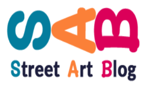
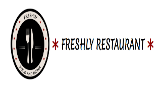

PorteFolio


Juin 2018 - Juillet 2021
Mars 2016 à Mai 2018
Juin à Octobre 2015, saisonnier
Décembre 2014 - Avril 2015, saisonnier
Mai 2014 à Octobre 2014, saisonnier
Décembre 2013 à Mars 2014, saisonnier
Été 2012/2013, saisonnier
Apprentissage HTML, CSS, JS, PHP, SQL
Découverte de Vue.JS, Laravel, Environnement Node, Git/GitHub
Formation FullStack en Alternance
Simfony et React.JS
Ma principale qualité est d’être curieux, j’adore apprendre de nouvelles choses et je prendrai donc du plaisir à continuer de me former ou à mettre à jours mes connaissances tout au long de ma futur carrière de développeur.
De plus, je suis aussi très à l’aise avec le travail en équipe, mes années de restauration m’ont habitué à travailler au quotidien avec des personnes aux profils différents du mien, en respectant l’individualité de chacun.
Je suis aussi quelqu’un avec une conscience professionnelle. J’aime travailler, et j’aime encore plus bien travailler, accomplissant au mieux et avec le plus grand sérieux les tâches qui me sont confiées.
Pour les défauts, je parlerai de mon exigence. Ma conscience professionnelle peut parfois être à double tranchant, mon envi de réussir ouvre la porte aux stress quand je rencontre des difficultés dans mon activité.
Mais j’ai appris à canaliser ce stress, sachant faire redescendre la pression, en changeant de tâche le temps de retrouver ma sérénité, en acceptant de demander de l’aide et en prenant conscience qu’on en peut pas toujours avoir toutes les solutions à portée de main.
Je vois plus facilement la complexité que la simplicité
La première et la plus importante de mes passions, c’est la littérature, avec une préférence pour la science-fiction et la fantasy, même si je peux apprécier n’importe quel genre de récit, du moment que ça me fait voyager. J’y consacre beaucoup de temps depuis que je sais lire, et je suis très fier de ma collection d’ouvrage.
J’aime aussi beaucoup la randonnée, une passion avec ma compagne. Découvrir tous les beaux paysages disséminés tout autour de nous est toujours un plaisir, et prendre un grand bol d’air en pleine nature permet de refaire le plein d’énergie, malgré la fatigue de l’activité physique.
N’hésitez pas à me parler aussi de vin ou de cinéma, ou même de musique, on ne sera sûrement pas d’accord sur tout mais les discussions n’en seront pas moins intéressante.